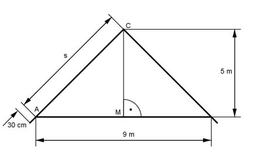

Pythagoras Aufgabe 57 Ein Satteldach ist 9 m breit und 5 m hoch. Wie lang sind die Sparren in m, wenn sie an der Dachtraufe 30 cm überstehen?  In einem gleichschenkligen Dreieck halbiert die Höhe die Grundseite und steht auf ihr senkrecht. Satz von Pythagoras im Dreieck AMC: AM = 9 m/2 = 4,5 m s² = AM² + MC² s² = 4,5² + 5² = 45,25 m² |√ s = 6,7 m 30 cm = 0,3 m Die Länge eines Sparrens beträgt 6,7 m + 0,3 m = 7 m